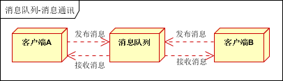
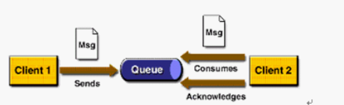

什么是消息队列#
消息队列(Message queue)是一种进程间通信或同一进程的不同线程间的通信方式，软件的贮列用来处理一系列的输入，通常来自用户。消息队列提供了异步的通信协议，每一个贮列中的记录包含详细说明的数据，包含发生的时间，输入设备的种类，以及特定的输入参数。也就是说：消息的发送者和接收者不需要同时与消息队列互交。消息会保存在队列中，直到接收者取回它。 –维基百科
最简单的模型：
Producer--send-->Borker--Receive-->Consumer
- Producer：消息生产者，负责生产和发送消息到Broker；
- Broker：消息处理中心，负责消息存储、确认、重试等，一般其中会包含多个queue；
- Consumer：消息的消费者，负责从Broker中获取消息，并进行相应处理。
- 异步性：将耗时的同步操作，通过发送消息的方式，进行了异步处理，减少了同步等待的时间。
- 松耦合：减少了服务之间的耦合性，不同的服务可以通过消息队列进行通信，从而不关心彼此的实现细节，只要定义好消息的格式就行。
- 分布式：通过对消费者的横向扩展，降低了消息队列阻塞的风险，以及单个消费者产生单点故障的可能性(消息队列本身也可以做成分布式请求)
- 可靠性：消息队列一般会把接收到的消息存储到本地硬盘上(当消息被处理完后，根据不同的消息队列实现，可能删除)，这样即使消息队列挂掉或消息队列本身挂掉，消息也能重新加载。
为什么使用消息队列#
消息队列中间件是分布式系统中重要的组件，主要解决应用解耦，异步消息，流量削锋等问题，实现高性能，高可用，可伸缩和最终一致性架构。目前使用较多的消息队列有ActiveMQ，RabbitMQ，ZeroMQ，Kafka，MetaMQ，RocketMQ。在高并发环境下，由于来不及同步处理，请求往往会发生堵塞，如大量的insert、update请求同时到达mysql，直接导致无数的行锁表锁，甚至最后请求会堆积过多，从而触发too many connections错误。通过使用消息队列，可以异步处理请求，从而缓解系统压力。
MQ使用场景#
- 异步处理：高并发场景，使用MQ的异步特性
- 消息通讯：进程间通讯和系统间的消息通知，如在分布式系统中
- 应用解耦：公司中有许多团队，每个团队负责不同的模块，各个模块可以使用MQ来通信
- 流量削峰
异步处理#
场景说明：用户注册后，需要发注册邮件和注册短信。传统的做法有两种 1.串行 2.并行
1.串行：将注册信息写入数据库成功后，发送注册邮件，再发送注册短信。以上三个任务全部完成后，返回给客户端。
 2.并行：将注册信息写入数据库成功后，发送注册邮件的同时，发送注册短信。以上三个任务完成后，返回给客户端。与串行的差别是，并行的方式可以加快处理的速度
2.并行：将注册信息写入数据库成功后，发送注册邮件的同时，发送注册短信。以上三个任务完成后，返回给客户端。与串行的差别是，并行的方式可以加快处理的速度

假设三个业务节点每个使用50毫秒钟，不考虑网络等其他开销，则串行方式的时间是150毫秒，并行的时间可能是100毫秒。因为CPU在单位时间内处理的请求数是一定的，假设CPU1秒内吞吐量是100次。则串行方式1秒内CPU可处理的请求量是7次（1000/150）。并行方式处理的请求量是10次（1000/100）小结：综上所述，传统的方式系统的性能（并发量，吞吐量，响应时间）会有瓶颈。如何解决这个问题呢？
3.引入消息队列，将不是必须的业务逻辑，异步处理。改造后的架构如下：
 按照以上约定，用户的响应时间相当于是注册信息写入数据库的时间，也就是50毫秒。注册邮件，发送短信写入消息队列后，直接返回，因为写入消息队列的速度很快，基本可以忽略，因此用户的响应时间可能是50毫秒。架构改变后，系统的吞吐量提高到每秒20 QPS。比串行提高了3倍，比并行提高了两倍。
按照以上约定，用户的响应时间相当于是注册信息写入数据库的时间，也就是50毫秒。注册邮件，发送短信写入消息队列后，直接返回，因为写入消息队列的速度很快，基本可以忽略，因此用户的响应时间可能是50毫秒。架构改变后，系统的吞吐量提高到每秒20 QPS。比串行提高了3倍，比并行提高了两倍。
应用解耦#
场景说明：用户下单后，订单系统需要通知库存系统。传统的做法是，订单系统调用库存系统的接口。如下图：
 传统模式的缺点：假如库存系统无法访问，则订单减库存将失败，从而导致订单失败，订单系统与库存系统耦合。
如何解决以上问题呢？引入应用消息队列后的方案，如下图：
传统模式的缺点：假如库存系统无法访问，则订单减库存将失败，从而导致订单失败，订单系统与库存系统耦合。
如何解决以上问题呢？引入应用消息队列后的方案，如下图：

订单系统：用户下单后，订单系统完成持久化处理，将消息写入消息队列，返回用户订单下单成功
库存系统：订阅下单的消息，采用拉/推的方式，获取下单信息，库存系统根据下单信息，进行库存操作。
假如：在下单时库存系统不能正常使用。也不影响正常下单，因为下单后，订单系统写入消息队列就不再关心其他的后续操作了，实现订单系统与库存系统的应用解耦。
流量削峰#
流量削锋也是消息队列中的常用场景，一般在秒杀或团抢活动中使用广泛。
应用场景：秒杀活动，一般会因为流量过大，导致流量暴增，应用挂掉。为解决这个问题，一般需要在应用前端加入消息队列。
a、可以控制活动的人数
b、可以缓解短时间内高流量压垮应用
 用户的请求，服务器接收后，首先写入消息队列。假如消息队列长度超过最大数量，则直接抛弃用户请求或跳转到错误页面。秒杀业务根据消息队列中的请求信息，再做后续处理。
用户的请求，服务器接收后，首先写入消息队列。假如消息队列长度超过最大数量，则直接抛弃用户请求或跳转到错误页面。秒杀业务根据消息队列中的请求信息，再做后续处理。
日志处理#
日志处理是指将消息队列用在日志处理中，比如Kafka的应用，解决大量日志传输的问题。架构简化如下：
 日志采集客户端：负责日志数据采集，定时写受写入Kafka队列。
Kafka消息队列：负责日志数据的接收，存储和转发。
日志处理应用：订阅并消费kafka队列中的日志数据 。
日志采集客户端：负责日志数据采集，定时写受写入Kafka队列。
Kafka消息队列：负责日志数据的接收，存储和转发。
日志处理应用：订阅并消费kafka队列中的日志数据 。
消息通讯#
消息通讯是指，消息队列一般都内置了高效的通信机制，因此也可以用在纯的消息通讯。比如实现点对点消息队列，或者聊天室等。
点对点通讯：
 客户端A和客户端B使用同一队列，进行消息通讯。
客户端A和客户端B使用同一队列，进行消息通讯。
聊天室通讯：

客户端A，客户端B，客户端N订阅同一主题，进行消息发布和接收。实现类似聊天室效果。
以上实际是消息队列的两种消息模式，点对点或发布订阅模式。模型为示意图，供参考。
MQ使用示例#
电商系统#
 消息队列采用高可用，可持久化的消息中间件。比如Active MQ，Rabbit MQ，Rocket Mq。
（1）应用将主干逻辑处理完成后，写入消息队列。消息发送是否成功可以开启消息的确认模式。（消息队列返回消息接收成功状态后，应用再返回，这样保障消息的完整性）
（2）扩展流程（发短信，配送处理）订阅队列消息。采用推或拉的方式获取消息并处理。
（3）消息将应用解耦的同时，带来了数据一致性问题，可以采用最终一致性方式解决。比如主数据写入数据库，扩展应用根据消息队列，并结合数据库方式实现基于消息队列的后续处理。
消息队列采用高可用，可持久化的消息中间件。比如Active MQ，Rabbit MQ，Rocket Mq。
（1）应用将主干逻辑处理完成后，写入消息队列。消息发送是否成功可以开启消息的确认模式。（消息队列返回消息接收成功状态后，应用再返回，这样保障消息的完整性）
（2）扩展流程（发短信，配送处理）订阅队列消息。采用推或拉的方式获取消息并处理。
（3）消息将应用解耦的同时，带来了数据一致性问题，可以采用最终一致性方式解决。比如主数据写入数据库，扩展应用根据消息队列，并结合数据库方式实现基于消息队列的后续处理。
日志收集系统#
 分为Zookeeper注册中心，日志收集客户端，Kafka集群和Storm集群（OtherApp）四部分组成。
Zookeeper注册中心，提出负载均衡和地址查找服务
日志收集客户端，用于采集应用系统的日志，并将数据推送到kafka队列
Kafka集群：接收，路由，存储，转发等消息处理
Storm集群：与OtherApp处于同一级别，采用拉的方式消费队列中的数据
分为Zookeeper注册中心，日志收集客户端，Kafka集群和Storm集群（OtherApp）四部分组成。
Zookeeper注册中心，提出负载均衡和地址查找服务
日志收集客户端，用于采集应用系统的日志，并将数据推送到kafka队列
Kafka集群：接收，路由，存储，转发等消息处理
Storm集群：与OtherApp处于同一级别，采用拉的方式消费队列中的数据
JMS#
讲消息队列就不得不提JMS。JMS（JAVA Message Service，java消息服务）API是一个消息服务的标准/规范，允许应用程序组件基于JavaEE平台创建、发送、接收和读取消息。它使分布式通信耦合度更低，消息服务更加可靠以及异步性。在EJB架构中，有消息bean可以无缝的与JM消息服务集成。在J2EE架构模式中，有消息服务者模式，用于实现消息与应用直接的解耦。
消息模型#
在JMS标准中，有两种消息模型P2P（Point to Point）、Publish/Subscribe(Pub/Sub)
P2P#

P2P模式包含三个角色：消息队列（Queue），发送者(Sender)，接收者(Receiver)。每个消息都被发送到
一个特定的队列，接收者从队列中获取消息。队列保留着消息，直到他们被消费或超时。
P2P的特点：
- 每个消息只有一个消费者（Consumer）(即一旦被消费，消息就不再在消息队列中)
- 发送者和接收者之间在时间上没有依赖性，也就是说当发送者发送了消息之后，不管接收者有没有正在运行，它不会影响到消息被发送到队列
- 接收者在成功接收消息之后需向队列应答成功
- 如果希望发送的每个消息都会被成功处理的话，那么需要P2P模式。
Pub/Sub模式#
 包含三个角色主题（Topic），发布者（Publisher），订阅者（Subscriber） 多个发布者将消息发送到Topic，系统将这些消息传递给多个订阅者。
包含三个角色主题（Topic），发布者（Publisher），订阅者（Subscriber） 多个发布者将消息发送到Topic，系统将这些消息传递给多个订阅者。
Pub/Sub的特点
- 每个消息可以有多个消费者
- 发布者和订阅者之间有时间上的依赖性。针对某个主题（Topic）的订阅者，它必须创建一个订阅者之后，才能消费发布者的消息
- 为了消费消息，订阅者必须保持运行的状态
- 为了缓和这样严格的时间相关性，JMS允许订阅者创建一个可持久化的订阅。这样，即使订阅者没有被激活（运行），它也能接收到发布者的消息。
- 如果希望发送的消息可以不被做任何处理、或者只被一个消息者处理、或者可以被多个消费者处理的话，那么可以采用Pub/Sub模型。
消息消费#
在JMS中，消息的产生和消费都是异步的。对于消费来说，JMS的消息者可以通过两种方式来消费消息。
JNDI：Java命名和目录接口，是一种标准的Java命名系统接口。可以在网络上查找和访问服务。通过指定一个资源名称，该名称对应于数据库或命名服务中的一个记录，同时返回资源连接建立所必须的信息。JNDI在JMS中起到查找和访问发送目标或消息来源的作用。
常用的消息队列#
Kafka、rocketmq、activemq、rabbitmq，对比社区活跃度、吞吐量、可靠性、时效性等，选择rocketmq和Kafka。
Kafka#
Kafka是最初由Linkedin公司开发，是一个分布式、分区的、多副本的、多订阅者，基于zookeeper协调的分布式日志系统（也可以当做MQ系统），常见可以用于web/nginx日志、访问日志，消息服务等等，Linkedin于2010年贡献给了Apache基金会并成为顶级开源项目。
主要应用场景是：日志收集系统和消息系统。
Kafka主要设计目标如下：
- 以时间复杂度为O(1)的方式提供消息持久化能力，即使对TB级以上数据也能保证常数时间的访问性能。
- 高吞吐率。即使在非常廉价的商用机器上也能做到单机支持每秒100K条消息的传输。
- 支持Kafka Server间的消息分区，及分布式消费，同时保证每个partition内的消息顺序传输。
- 同时支持离线数据处理和实时数据处理。
- Scale out:支持在线水平扩展
kafka参考
RocketMQ#
RocketMQ官方文档
官方开发指南
开源版和商用版#
RocketMQ有一个开源的（就是github上的），一个商用的（通过阿里云购买使用）。二者区别：
开源版本RocketMQ仅支持定时Level，从1秒到2小时，共18个级别，不能自定义。商用MQ支持毫秒级别的延时时间。
参考
基本概念#
消息模型（Message Model）#
RocketMQ主要由 Producer、Broker、Consumer 三部分组成，其中Producer 负责生产消息，Consumer 负责消费消息，Broker 负责存储消息。Broker 在实际部署过程中对应一台服务器，每个 Broker 可以存储多个Topic的消息，每个Topic的消息也可以分片存储于不同的 Broker。Message Queue 用于存储消息的物理地址，每个Topic中的消息地址存储于多个 Message Queue 中。ConsumerGroup 由多个Consumer 实例构成。
消息生产者（Producer）#
负责生产消息，一般由业务系统负责生产消息。一个消息生产者会把业务应用系统里产生的消息发送到broker服务器。RocketMQ提供多种发送方式，同步发送、异步发送、顺序发送、单向发送。同步和异步方式均需要Broker返回确认信息，单向发送不需要。
消息消费者（Consumer）#
负责消费消息，一般是后台系统负责异步消费。一个消息消费者会从Broker服务器拉取消息、并将其提供给应用程序。从用户应用的角度而言提供了两种消费形式：拉取式消费、推动式消费。
主题（Topic）#
表示一类消息的集合，是一种消息的逻辑分类，每个主题包含若干条消息，每条消息只能属于一个主题，是RocketMQ进行消息订阅的基本单位。
代理服务器（Broker Server）#
消息中转角色，负责存储消息、转发消息。代理服务器在RocketMQ系统中负责接收从生产者发送来的消息并存储、同时为消费者的拉取请求作准备。代理服务器也存储消息相关的元数据，包括消费者组、消费进度偏移和主题和队列消息等。
名字服务（Name Server）#
名称服务充当路由消息的提供者。生产者或消费者能够通过名字服务查找各主题相应的Broker IP列表。多个Namesrv实例组成集群，但相互独立，没有信息交换。
拉取式消费（Pull Consumer）#
Consumer消费的一种类型，应用通常主动调用Consumer的拉消息方法从Broker服务器拉消息、主动权由应用控制。一旦获取了批量消息，应用就会启动消费过程。
推动式消费（Push Consumer）#
Consumer消费的一种类型，该模式下Broker收到数据后会主动推送给消费端，该消费模式一般实时性较高。
生产者组（Producer Group）#
同一类Producer的集合，这类Producer发送同一类消息且发送逻辑一致。如果发送的是事务消息且原始生产者在发送之后崩溃，则Broker服务器会联系同一生产者组的其他生产者实例以提交或回溯消费。
消费者组（Consumer Group）#
同一类Consumer的集合，这类Consumer通常消费同一类消息且消费逻辑一致。消费者组使得在消息消费方面，实现负载均衡和容错的目标变得非常容易。要注意的是，消费者组的消费者实例必须订阅完全相同的Topic。
RocketMQ 支持两种消息模式：集群消费（Clustering）和广播消费（Broadcasting）。
集群消费（Clustering）#
集群消费模式下,相同Consumer Group的每个Consumer实例平均分摊消息。
广播消费（Broadcasting）#
广播消费模式下，相同Consumer Group的每个Consumer实例都接收全量的消息。
普通顺序消息（Normal Ordered Message）#
普通顺序消费模式下，消费者通过同一个消费队列收到的消息是有顺序的，不同消息队列收到的消息则可能是无顺序的。
严格顺序消息（Strictly Ordered Message）#
严格顺序消息模式下，消费者收到的所有消息均是有顺序的。
消息（Message）#
消息系统所传输信息的物理载体，生产和消费数据的最小单位，每条消息必须属于一个主题。RocketMQ中每个消息拥有唯一的Message ID，且可以携带具有业务标识的Key。系统提供了通过Message ID和Key查询消息的功能。
标签（Tag）#
为消息设置的标志，用于同一主题下区分不同类型的消息。来自同一业务单元的消息，可以根据不同业务目的在同一主题下设置不同标签。标签能够有效地保持代码的清晰度和连贯性，并优化RocketMQ提供的查询系统。消费者可以根据Tag实现对不同子主题的不同消费逻辑，实现更好的扩展性。
特性(features)#
介绍RocketMQ实现的功能特性。
介绍RocketMQ部署架构和技术架构
介绍RocketMQ关键机制的设计原理
官网安装教程
source release是源代码，需要编译打包才能运行。
binary release是编译好的，可以直接运行。
linux安装，参考官网。
windows安装，推荐下载binary release。
-
将下载好的文件解压到理想位置。
-
添加系统环境变量。
ROCKETMQ_HOME="D:\你的解压位置"
NAMESRV_ADDR="localhost:9876"
环境变量配置完成，必须重启电脑。
-
启动name server
通过git bush，cd到安装目录的bin目录下，执行命令
./mqnamesrv.cmd
看到The Name Server boot success. serializeType=JSON，证明启动成功，这个窗口不要关。
如果启动报错：错误: 找不到或无法加载主类。
那应该是jdk的安装路径有问题，默认的安装路径：C:\Program Files\Java\jdk-12
Program Files 这个文件夹中带有空格，会影响mq的启动。
需要把JDK安装到没有空格的路径。
直接将Java文件夹（里面有jdk和jre）剪切到D盘根目录，然后修改系统环境变量
JAVA_HOME
-
启动broker
./mqbroker.cmd -n localhost:9876 autoCreateTopicEnable=true
如上的 ip+port 是NameServer的进程，因为Nameser安装启动在本地，所以这里的 ip 是 localhost。
运行如上命令，可能会报如下错误：找不到或无法加载主类。
如果出此情况，找到bin目录下的runbroker.cmd，给%CLASSPATH%加上双引号，"%CLASSPATH%"
再次执行启动命令，看到
The broker[DESKTOP-U0510U3, 192.168.2.156:10911] boot success. serializeType=JSON and name server is localhost:9876
证明broker启动成功。
代码示例#
引入依赖
1
2
3
4
5
|
<dependency>
<groupId>org.apache.rocketmq</groupId>
<artifactId>rocketmq-client</artifactId>
<version>4.8.0</version>
</dependency>
|
注意依赖版本一定要和前面安装的程序版本一致。
最基本示例#
Consumer
1
2
3
4
5
6
7
8
9
10
11
12
13
14
15
16
17
18
19
20
21
22
23
24
25
26
27
28
29
30
31
32
33
34
35
36
37
38
39
40
41
42
43
|
package com.wjy.rocketmq.consumer;
import org.apache.rocketmq.client.consumer.DefaultMQPushConsumer;
import org.apache.rocketmq.client.consumer.listener.ConsumeConcurrentlyContext;
import org.apache.rocketmq.client.consumer.listener.ConsumeConcurrentlyStatus;
import org.apache.rocketmq.client.consumer.listener.MessageListenerConcurrently;
import org.apache.rocketmq.client.exception.MQClientException;
import org.apache.rocketmq.common.message.MessageExt;
import java.util.List;
/**
* 消费者
*/
public class Consumer {
public static void main(String[] args) throws Exception {
startConsumer();
}
public static void startConsumer() throws Exception{
// 实例化消费者
DefaultMQPushConsumer consumer = new DefaultMQPushConsumer("please_rename_unique_group_name");
// 设置NameServer的地址
consumer.setNamesrvAddr("localhost:9876");
// 订阅一个或者多个Topic，以及Tag来过滤需要消费的消息
consumer.subscribe("TopicTest", "*");
// 注册回调实现类来处理从broker拉取回来的消息
consumer.registerMessageListener(new MessageListenerConcurrently() {
@Override
public ConsumeConcurrentlyStatus consumeMessage(List<MessageExt> msgs, ConsumeConcurrentlyContext context) {
System.out.printf("%s Receive New Messages: %s %n", Thread.currentThread().getName(), msgs);
// 标记该消息已经被成功消费
return ConsumeConcurrentlyStatus.CONSUME_SUCCESS;
}
});
// 启动消费者实例
consumer.start();
System.out.printf("Consumer Started.%n");
}
}
|
运行main方法，就启动了Consumer。
Producer
1
2
3
4
5
6
7
8
9
10
11
12
13
14
15
16
17
18
19
20
21
22
23
24
25
26
27
28
29
30
31
32
33
34
35
36
37
38
|
package com.wjy.rocketmq.producer;
import org.apache.rocketmq.client.producer.DefaultMQProducer;
import org.apache.rocketmq.client.producer.SendResult;
import org.apache.rocketmq.common.message.Message;
import org.apache.rocketmq.remoting.common.RemotingHelper;
/**
* 发送同步消息
* 这种可靠性同步地发送方式使用的比较广泛，比如：重要的消息通知，短信通知。
*/
public class SyncProducer {
public static void main(String[] args) throws Exception {
send();
}
public static void send() throws Exception {
// 实例化消息生产者Producer
DefaultMQProducer producer = new DefaultMQProducer("please_rename_unique_group_name");
// 设置NameServer的地址
producer.setNamesrvAddr("localhost:9876");
// 启动Producer实例
producer.start();
for (int i = 0; i < 100; i++) {
// 创建消息，并指定Topic，Tag和消息体
Message msg = new Message("TopicTest" /* Topic */,
"TagA" /* Tag */,
("Hello RocketMQ " + i).getBytes(RemotingHelper.DEFAULT_CHARSET) /* Message body */
);
// 发送消息到一个Broker
SendResult sendResult = producer.send(msg);
// 通过sendResult返回消息是否成功送达
System.out.printf("%s%n", sendResult);
}
// 如果不再发送消息，关闭Producer实例。
producer.shutdown();
}
}
|
通过main方法运行Producer，然后可以在Consumer 控制台查看收到的消息。
整合spring boot#
生产者和消费者放到一个模块里是没问题的。
生产者配置
1
2
3
4
5
6
7
8
9
10
11
12
|
# 是否开启自动配置
rocketmq.producer.isOnOff=on
# 发送同一类消息设置为同一个group，保证唯一默认不需要设置，rocketmq会使用ip@pid（pid代表jvm名字）作为唯一标识
rocketmq.producer.groupName=spring-application-api
# mq的nameserver地址
rocketmq.producer.namesrvAddr=127.0.0.1:9876
# 消息最大长度 默认 1024 * 4 (4M)
rocketmq.producer.maxMessageSize = 4096
# 发送消息超时时间，默认 3000
rocketmq.producer.sendMsgTimeOut=3000
# 发送消息失败重试次数，默认2
rocketmq.producer.retryTimesWhenSendFailed=2
|
1
2
3
4
5
6
7
8
9
10
11
12
13
14
15
16
17
18
19
20
21
22
23
24
25
26
27
28
29
30
31
32
33
34
|
@Slf4j
@Configuration
public class MQProducerConfigure {
@Value("${rocketmq.producer.groupName}")
private String groupName;
@Value("${rocketmq.producer.namesrvAddr}")
private String namesrvAddr;
@Value("${rocketmq.producer.maxMessageSize}")
private Integer maxMessageSize;
@Value("${rocketmq.producer.sendMsgTimeOut}")
private Integer sendMsgTimeOut;
@Value("${rocketmq.producer.retryTimesWhenSendFailed}")
private Integer retryTimesWhenSendFailed;
/**
* mq 生成者配置
* @return
* @throws MQClientException
*/
@Bean
public DefaultMQProducer defaultProducer() throws MQClientException {
log.info("defaultProducer 正在创建---------------------------------------");
DefaultMQProducer producer = new DefaultMQProducer(groupName);
producer.setNamesrvAddr(namesrvAddr);
producer.setVipChannelEnabled(false);
producer.setMaxMessageSize(maxMessageSize);
producer.setSendMsgTimeout(sendMsgTimeOut);
producer.setRetryTimesWhenSendAsyncFailed(retryTimesWhenSendFailed);
producer.start();
log.info("rocketmq producer server 开启成功----------------------------------");
return producer;
}
}
|
消费者配置
1
2
3
4
5
6
7
8
9
10
11
12
13
|
# 是否开启自动配置
rocketmq.consumer.isOnOff=on
# 发送同一类消息设置为同一个group，保证唯一默认不需要设置，rocketmq会使用ip@pid（pid代表jvm名字）作为唯一标识
rocketmq.consumer.groupName=spring-application-pay
# mq的nameserver地址
rocketmq.consumer.namesrvAddr=127.0.0.1:9876
# 消费者订阅的主题topic和tags（*标识订阅该主题下所有的tags），格式: topic~tag1||tag2||tags3;
rocketmq.consumer.topics=TestTopic~*;
# 消费者线程数据量
rocketmq.consumer.consumeThreadMin=5
rocketmq.consumer.consumeThreadMax=32
# 设置一次消费信心的条数，默认1
rocketmq.consumer.consumeMessageBatchMaxSize=1
|
1
2
3
4
5
6
7
8
9
10
11
12
13
14
15
16
17
18
19
20
21
22
23
24
25
26
27
28
29
30
31
32
33
34
35
36
37
38
39
40
41
42
43
44
45
46
47
48
49
50
51
52
53
54
55
56
57
58
59
60
61
|
@Slf4j
@Configuration
public class MQConsumerConfigure {
@Value("${rocketmq.consumer.groupName}")
private String groupName;
@Value("${rocketmq.consumer.namesrvAddr}")
private String namesrvAddr;
@Value("${rocketmq.consumer.topics}")
private String topics;
@Value("${rocketmq.consumer.consumeThreadMin}")
private Integer consumeThreadMin;
@Value("${rocketmq.consumer.consumeThreadMax}")
private Integer consumeThreadMax;
@Value("${rocketmq.consumer.consumeMessageBatchMaxSize}")
private Integer consumeMessageBatchMaxSize;
@Autowired
private MQConsumeMsgListenerProcessor consumeMsgListenerProcessor;
/**
* mq 消费者配置
* @return
* @throws MQClientException
*/
@Bean
public DefaultMQPushConsumer defaultConsumer() throws MQClientException {
log.info("defaultConsumer 正在创建---------------------------------------");
DefaultMQPushConsumer consumer = new DefaultMQPushConsumer(groupName);
consumer.setNamesrvAddr(namesrvAddr);
consumer.setConsumeThreadMin(consumeThreadMin);
consumer.setConsumeThreadMax(consumeThreadMax);
consumer.setConsumeMessageBatchMaxSize(consumeMessageBatchMaxSize);
// 设置监听，处理业务逻辑
consumer.registerMessageListener(consumeMsgListenerProcessor);
/**
* 设置consumer第一次启动是从队列头部开始还是队列尾部开始
* 如果不是第一次启动，那么按照上次消费的位置继续消费
*/
consumer.setConsumeFromWhere(ConsumeFromWhere.CONSUME_FROM_LAST_OFFSET);
/**
* 设置消费模型，集群还是广播，默认为集群
*/
// consumer.setMessageModel(MessageModel.CLUSTERING);
try {
// 设置该消费者订阅的主题和tag，如果订阅该主题下的所有tag，则使用*,
String[] topicArr = topics.split(";");
for (String tag : topicArr) {
String[] tagArr = tag.split("~");
consumer.subscribe(tagArr[0], tagArr[1]);
}
consumer.start();
log.info("consumer 创建成功 groupName={}, topics={}, namesrvAddr={}",groupName,topics,namesrvAddr);
} catch (MQClientException e) {
log.error("consumer 创建失败!");
}
return consumer;
}
}
|
消费者监听
1
2
3
4
5
6
7
8
9
10
11
12
13
14
15
16
17
18
19
20
21
22
23
24
25
26
27
28
29
30
31
32
33
34
35
36
37
38
39
40
41
42
43
|
/**
* 处理业务逻辑
*/
@Slf4j
@Component
public class MQConsumeMsgListenerProcessor implements MessageListenerConcurrently {
@Resource
private OrdersMapper ordersMapper;
@Resource
private StudyCardMapper studyCardMapper;
@Resource
private StudyCardBatchMapper studyCardBatchMapper;
/**
* 默认msg里只有一条消息，可以通过设置consumeMessageBatchMaxSize参数来批量接收消息
* 不要抛异常，如果没有return CONSUME_SUCCESS ，consumer会重新消费该消息，直到return CONSUME_SUCCESS
* @param msgList
* @param consumeConcurrentlyContext
* @return
*/
@Override
public ConsumeConcurrentlyStatus consumeMessage(List<MessageExt> msgList, ConsumeConcurrentlyContext consumeConcurrentlyContext) {
if (CollectionUtils.isEmpty(msgList)) {
log.info("MQ接收消息为空，直接返回成功");
return ConsumeConcurrentlyStatus.CONSUME_SUCCESS;
}
MessageExt messageExt = msgList.get(0);
log.info("MQ接收到的消息为：" + messageExt.toString());
try {
String topic = messageExt.getTopic();
String tags = messageExt.getTags();
String body = new String(messageExt.getBody(), "utf-8");
log.info("MQ消息topic={}, tags={}, 消息内容={}", topic,tags,body);
// TODO 处理业务逻辑，取消订单等操作
} catch (Exception e) {
log.error("获取MQ消息内容异常{}",e);
}
return ConsumeConcurrentlyStatus.CONSUME_SUCCESS;
}
}
|
找到合适的位置，发送mq消息
1
2
|
@Autowired
private DefaultMQProducer defaultMQProducer;
|
1
2
3
4
5
6
7
8
9
10
11
12
13
14
15
16
|
try {
log.info("发送MQ消息内容：" + orderNo);
Message sendMsg = new Message("TestTopic", "TestTag", orderNo.getBytes());
//设置延时队列，无法自定义时间，有1-18，共18个等级
sendMsg.setDelayTimeLevel(4);
SendResult sendResult = defaultMQProducer.send(sendMsg);
log.info("消息发送响应：" + sendResult.toString());
} catch (MQClientException e) {
e.printStackTrace();
} catch (RemotingException e) {
e.printStackTrace();
} catch (MQBrokerException e) {
e.printStackTrace();
} catch (InterruptedException e) {
e.printStackTrace();
}
|
官方代码示例#
官方示例
修改延时级别#
RocketMQ自带的延时级别：
1s 5s 10s 30s 1m 2m 3m 4m 5m 6m 7m 8m 9m 10m 20m 30m 1h 2h
从1秒到2小时，这可能不满足我们的业务需求，我们可以修改这个配置。
找到broker.conf，位置在
D:\install\rocketmq-4.9.2\conf\broker.conf
在最后一行增加配置
messageDelayLevel=11s 5s 10s 30s 1m 2m 3m 4m 5m 6m 7m 8m 9m 10m 20m 30m 1h 2h
将级别1设置成了11秒延时。然后重启broker（需要指定配置文件）
windows：./mqbroker.cmd -n localhost:9876 autoCreateTopicEnable=true -c../conf/broker.conf
linux：nohup sh mqbroker -n localhost:9876 -c ../conf/broker.conf &
测试成功。